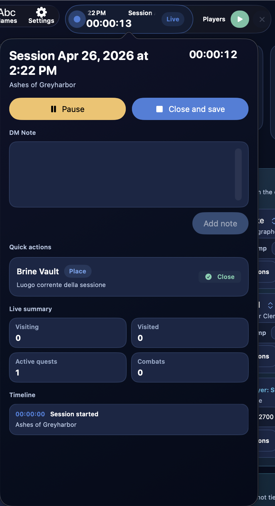
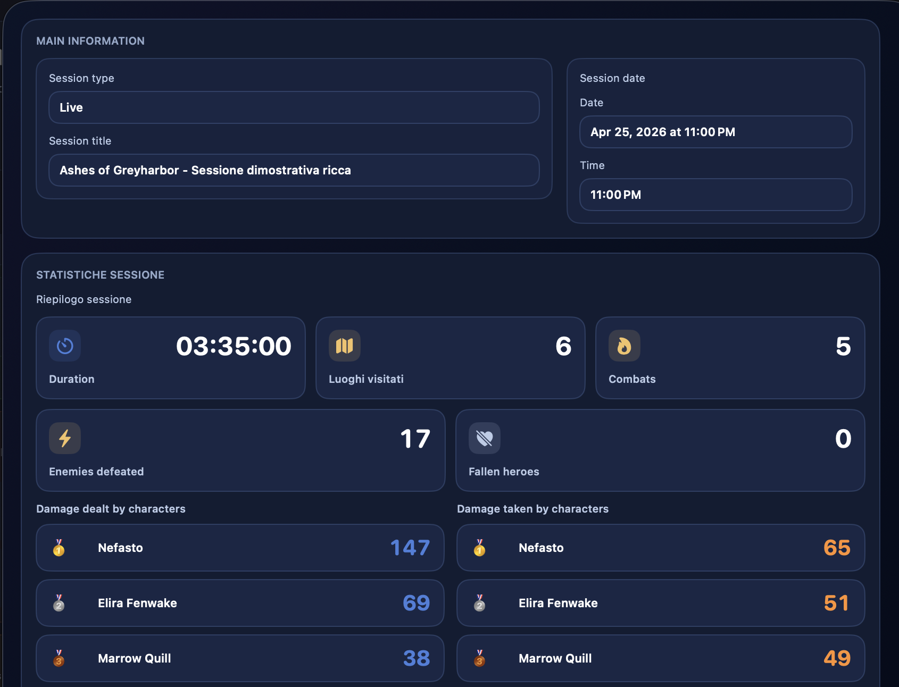
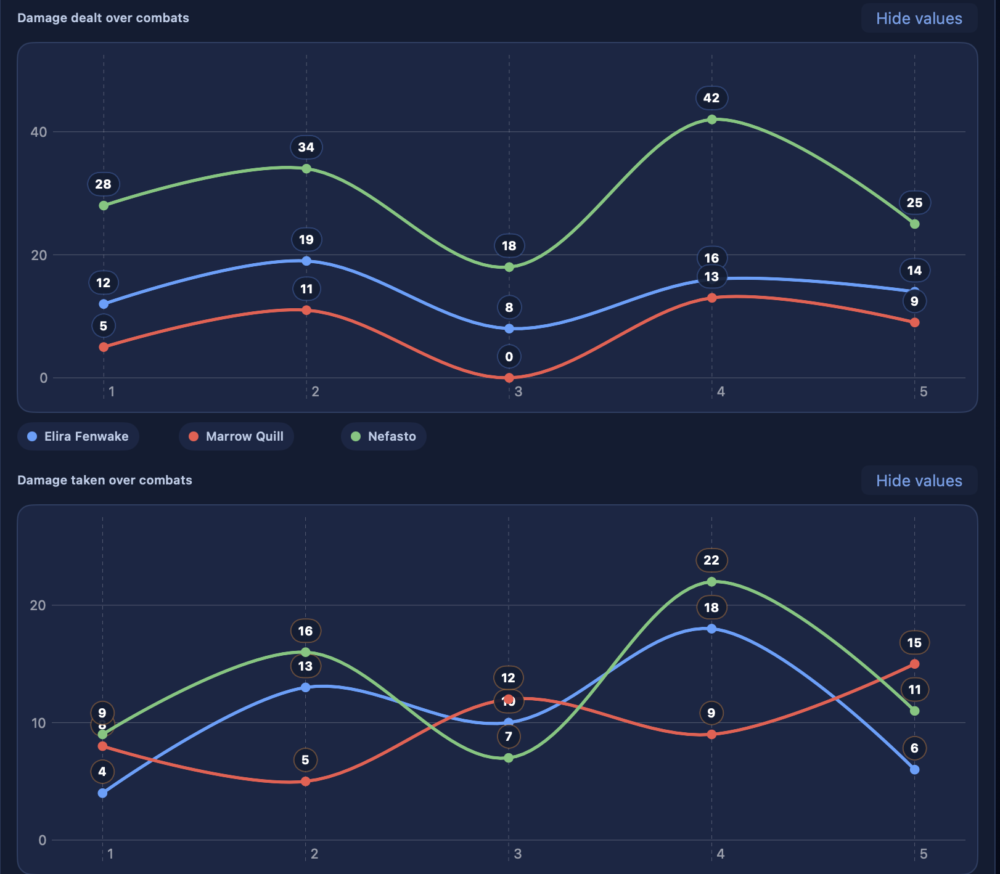

Live-Session¶
Die Live-Session ist der operative Kontext der laufenden Spielsitzung. Sie ist nicht einfach nur ein Timer, sondern ein System, das Folgendes zusammenhält:
- die Spielzeit der Sitzung
- die Timeline wichtiger Ereignisse
- schnelle SL-Notizen
- den Status besuchter Orte
- aktive oder abgeschlossene Quests
- gespielte Kämpfe
- aggregierte Sitzungsstatistiken
Praktisch bedeutet das: Wenn eine Live-Session aktiv ist, weiß DnDino, welche Kampagne gerade läuft, und nutzt diesen Kontext, um verschiedene Teile der App miteinander zu verbinden.
Wofür sie gedacht ist¶
Die Live-Session ist nützlich, wenn du DnDino während einer echten Spielsitzung am Tisch verwenden willst und nicht nur zur Vorbereitung.
Sie dient dazu:
- die Sitzungszeit zu verfolgen
- eine geordnete Timeline der wichtigsten Ereignisse zu führen
- SL-Informationen schnell zu notieren
- Orte als besucht oder in Besuch zu markieren
- eine dynamische Sitzungsübersicht zu sehen
- automatisch Daten aus dem Kampf zu sammeln
Wo sie gestartet wird¶
Die Live-Session wird über die Steuerung in der Mitte der Topbar gestartet, wenn du dich in einer Abenteuerseite befindest, etwa Dashboard, Orte oder Kampf.
Wenn keine Sitzung aktiv ist, zeigt die Steuerung die Startaktion. Beim Auslösen fragt DnDino nach Bestätigung und erstellt danach eine neue Live-Sitzung für das aktuelle Abenteuer.
Du musst also nicht zum Dashboard zurückkehren, nur um die Sitzung zu starten: der Befehl bleibt dort verfügbar, wo du gerade arbeitest.
Nur eine Live-Session gleichzeitig¶
DnDino verwaltet immer nur eine aktive Live-Session gleichzeitig.
Wenn bereits in einem anderen Abenteuer eine Sitzung geöffnet ist:
- kann das aktuelle Abenteuer keine zweite starten
- zeigt das Dashboard einen Hinweis, dass die aktive Live-Session zu einer anderen Kampagne gehört
Was passiert, wenn eine Live-Session aktiv ist¶
Wenn eine Live-Session läuft:
- zeigt die obere Leiste ihren Status
- aktualisiert sich der Timer weiter
- folgen Orte diesem Kontext
- beginnt die Timeline Ereignisse zu sammeln
- kann auch der Kampf Daten in die Session schicken
Die Live-Session wird dadurch zum roten Faden der laufenden Partie.
Sitzungsstatus¶
Die Live-Session kann drei Zustände haben:
- aktiv
- pausiert
- unterbrochen
Aktiv¶
Das ist der normale Zustand, solange die Sitzung läuft. Der Timer zählt weiter und Ereignisse werden mit der korrekten verstrichenen Zeit gespeichert.
Pausiert¶
Die Sitzung kann über die Topbar pausiert werden.
Wenn sie pausiert ist:
- stoppt der Timer
- bleibt die Sitzung trotzdem offen
- kann sie später fortgesetzt werden
Unterbrochen¶
Wenn die App geschlossen wird, während die Sitzung noch aktiv ist, öffnet DnDino sie beim nächsten Start als unterbrochen wieder und protokolliert ein eigenes Ereignis in der Timeline.
Das macht es möglich:
- die Sitzung nicht zu verlieren
- zu erkennen, dass eine Unterbrechung stattgefunden hat
- die Arbeit manuell wieder aufzunehmen
Live-Sitzungssteuerung in der Topbar¶
Auf den Abenteuerseiten zeigt die Topbar die Live-Sitzungssteuerung in der Mitte.
Wenn die Sitzung zum geöffneten Abenteuer gehört, zeigt die Steuerung:
- Sitzungstitel
- Echtzeit-Timer
-
Status (
LäuftoderPausiert) Wenn keine Live-Session aktiv ist: -
erscheint der Befehl zum Starten der Live-Sitzung des aktuellen Abenteuers
Wenn eine Sitzung aktiv ist, aber zu einem anderen Abenteuer gehört:
- zeigt die Steuerung, dass die Live-Session derzeit anderswo belegt ist
Die Live-Session in der Topbar¶
Wenn eine Live-Session aktiv ist, zeigt die obere Leiste der App einen eigenen Indikator an.
Die vollständige Beschreibung der Topbar findest du auf der Seite Topbar.

Schnellfenster der Live-Sitzung¶
Über das Schnellfenster der Sitzung kannst du sehr schnelle Aktionen ausführen, ohne den aktuellen Bildschirm zu verlassen.
Dort findest du:
PauseoderFortsetzenSchließen und speichern- Schnelleditor für
SL-Notiz - die Sitzungstimeline
- Schnellaktionen für den aktuell besuchten Ort
- kompakte Live-Zusammenfassung
Schnelle SL-Notiz¶
Im Popover der Live-Session kannst du eine SL-Notiz schreiben und sofort zur Timeline hinzufügen.
Das ist nützlich, um schnell festzuhalten:
- Entscheidungen der Spielenden
- erzählerische Ideen
- Konsequenzen, an die du dich erinnern willst
- improvisierte Einfälle, die während der Sitzung entstanden sind
SL-Notizen werden als Timeline-Ereignisse gespeichert.
Sitzungstimeline¶
Die Timeline ist das chronologische Protokoll der Live-Session.
Jedes Ereignis speichert:
- Titel
- Detail
- den Zeitpunkt innerhalb der Sitzung
Die Timeline kann sowohl Systemereignisse als auch SL-Notizen enthalten.
Typen aufgezeichneter Ereignisse¶
Zu den wichtigsten Ereignissen, die DnDino automatisch protokolliert, gehören:
Session gestartetSession pausiertSession fortgesetztSession durch Schließen der App unterbrochenOrt betretenOrt verlassenOrtsstatus aktualisiertQuest aktiviertQuest abgeschlossenKampf begonnenKampf beendetSL-Notiz
Verbindung mit Orten¶
Die Live-Session ist direkt mit den Orten des aktiven Abenteuers verbunden.
Wenn du im Kontext der Sitzung einen Ort aktualisierst:
- wird die Statusänderung protokolliert
- aktualisiert sich die Timeline
- ändert sich die Live-Zusammenfassung entsprechend
Die wichtigsten ortsbezogenen Werte sind:
- Orte in Besuch
- besuchte Orte
- aktive Quests
- abgeschlossene Quests
Automatisches Schließen des zuvor besuchten Ortes¶
In den Einstellungen gibt es außerdem eine Logik, die an die Live-Session gekoppelt ist: Wenn ein Ort auf In Besuch gesetzt wird, kann der zuvor in Besuch befindliche Ort automatisch als Besucht markiert werden.
Diese Funktion gilt nur, wenn eine aktive Live-Session existiert, und ist sehr nützlich, um das Erkundungstracking konsistent zu halten.
Live-Zusammenfassung¶


Die Live-Zusammenfassung aggregiert die wichtigsten Daten, die während der Sitzung gesammelt wurden.
Zu den wichtigsten Werten gehören:
- besuchte Orte
- Orte in Besuch
- aktive Quests
- abgeschlossene Quests
- gespielte Kämpfe
- besiegte Feinde
- gefallene Helden
- gesamte Kampfdauer
Die Live-Session hält außerdem zwei sehr nützliche Übersichten für Charaktere fest:
- von Helden verursachter Schaden
- von Helden erlittener Schaden
- durchschnittliche Zugdauer, wenn sie aus abgeschlossenen Kämpfen stammt
Integration mit dem Kampf¶
Die Live-Session und der Kampf sind eng miteinander verbunden.
Wenn du während einer Live-Session einen Kampf startest, protokolliert DnDino:
Kampf begonnen
Während des Kampfes kann es sammeln:
- aggregierte Daten für Zusammenfassung und Statistiken
Wenn du den Kampf schließt, protokolliert es:
Kampf beendet- Dauer der Begegnung
- besiegte Feinde
- gefallene Helden
Verursachter und erlittener Schaden¶
Die Live-Session verfolgt Schaden in zwei getrennten Ranglisten:
Von Charakteren verursachter SchadenVon Charakteren erlittener Schaden
Diese Zählung ist nur für die Abenteuerhelden gedacht, nicht für alle Teilnehmenden eines Kampfes.
Die Detailansicht einer gespeicherten Sitzung kann außerdem Diagramme für die in dieser Sitzung abgeschlossenen Kämpfe zeigen:
- verursachter Schaden pro Kampf
- erlittener Schaden pro Kampf
- durchschnittliche Zugdauer pro Kampf
Jeder Kampf bleibt chronologisch auf der horizontalen Achse. Charaktere, die teilgenommen haben, werden auch dann angezeigt, wenn sie in einem Kampf 0 Schaden verursacht oder erlitten haben. Hat ein Charakter an einem Kampf nicht teilgenommen, erscheint er an diesem Punkt nicht.
Diese Diagramme zeigen, wer während der Sitzung den größten Einfluss hatte und wer über die Begegnungen hinweg den meisten Schaden aufgenommen hat.
Das Diagramm zur Zugdauer hilft zu verstehen, wie viel Zeit Helden und SL im Durchschnitt während der Kämpfe der Sitzung benötigen.
Gefallene Helden¶
Wenn ein Kampf endet, kann die Live-Zusammenfassung auch den Zähler der gefallenen Helden erhöhen.
Dieser Wert wird direkt aus dem Endergebnis des Kampfes gespeist.
Live-Session und Spielerfenster¶
Die Live-Session ist nicht dasselbe wie das Spielerfenster, aber beide Dinge sind miteinander verbunden.
Die Live-Session liefert den allgemeinen Kontext der Partie, während das Spielerfenster der Kanal für die visuelle Präsentation ist.
Insbesondere:
- während des Kampfes kann das Spielerfenster Intro, aktuellen Zug und Abschlusszusammenfassung zeigen
- außerhalb des Kampfes kann das Spielerfenster weiterhin genutzt werden, um Bilder und Inhalte des aktuell aktiven Kontexts zu zeigen
Schließen und Speichern¶
Wenn du Schließen und speichern wählst, dann:
- finalisiert DnDino die Sitzung
- speichert die gesammelten Daten
- schreibt die Timeline in die mit dem Abenteuer verknüpfte Sitzung
- schließt den globalen Live-Kontext
Nach dem Schließen bleibt die Sitzung als gespeicherte Sitzung einsehbar.
Anzeige einer gespeicherten Sitzung¶
Eine bereits beendete Live-Session kann wieder als Detailansicht geöffnet werden.
Im Detailpanel findest du:
- Zusammenfassung und Timeline
- aufgezeichnete Dauer
- besuchte Orte
- gespielte Kämpfe
- besiegte Feinde
- gefallene Helden
- Ranglisten zu verursachtem und erlittenem Schaden der Charaktere
- Diagramme zu verursachtem und erlittenem Schaden in den Kämpfen der Sitzung
- Diagramm zur durchschnittlichen Zugdauer, sofern verfügbar
Wann die Live-Session besonders sinnvoll ist¶
Die Live-Session ist besonders nützlich, wenn du:
- DnDino während des Spiels offen halten willst
- schnell festhalten willst, was am Tisch tatsächlich passiert
- wissen willst, welche Orte besucht wurden
- eine geordnete Timeline der Schlüsselmomente haben willst
- Kampf automatisch in die Sitzungszusammenfassung einfließen lassen willst
In der Praxis¶
Die Live-Session ist die Brücke zwischen:
- Vorbereitung
- operativer Spielleitung
- finaler Erinnerung an die Sitzung
Gut eingesetzt reduziert sie stark das Risiko, wichtige Informationen während des Spiels zu verlieren, und macht es sehr viel leichter, später nachzuvollziehen, was in der Kampagne tatsächlich passiert ist.